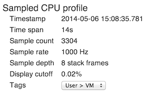
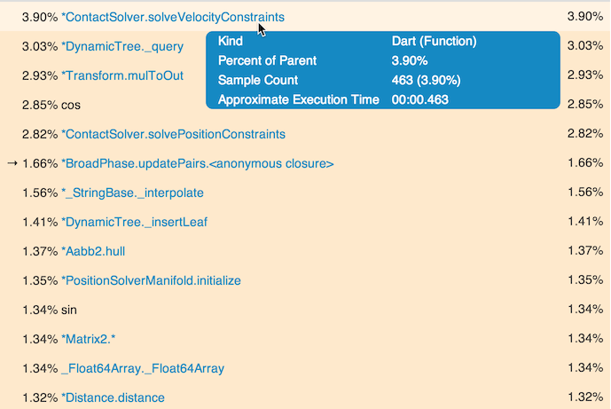
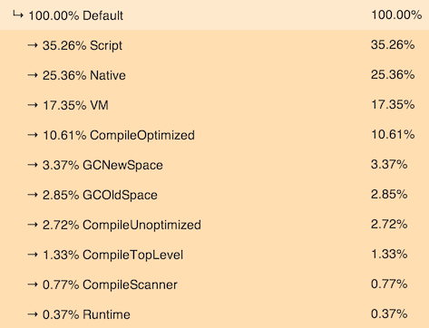
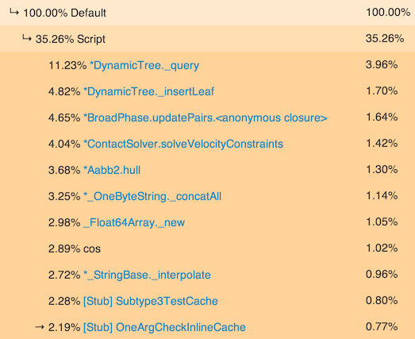

The CPU profile tells you how the virtual machine (VM) has been spending its time when executing an isolate. The following video gives a brief overview of Observatory with some specific tips on how to use the profiling feature.
Observatory achieves this by sampling the isolate at regular intervals. The sampled data is aggregated and displayed in a profile tree.
When Observatory samples the isolate, it saves the sampled data in a ring buffer, called the profile, which can hold up to two minutes worth of data. Once the buffer becomes full, the oldest samples are replaced with new samples.
At the top of the screen, a summary tells you a bit about how the data was gathered:

main().Below the summary is a two-column profile tree that reflects the activity of the sampled isolate. Each row in the tree is a VM tag, a user tag, or a function. A function can be native (C/C++) code or Dart code. You can expand or collapse nodes in the tree by clicking the arrows to the left.
The percentages on the left are the percent of calls to the parent. These percentages add up to 100%. The percentages on the right show the percentage of samples where the tag was active, or where the function was executing.
The following screenshot shows a sample profile tree with tags suppressed so that only function calls are displayed.

Because tags are hidden in the previous example, each row contains a function. The functions are listed in order from most CPU intensive to least.
The first row in the previous screenshot shows the
ContactSolver.solveVelocityConstraints function.
The percentage on the left shows that
this function used 4.12% of the root isolate’s CPU time.
The percentage on the right shows that 4.12% of the samples
were taken while this function was active.
Note that, for the topmost level of the tree, the percentages in the right column are the same as those in the left column.
Clicking an arrow to the left of a function expands the tree to show
the calling function.
You can drill down the stack 8 levels deep, or until you reach the
main function, whichever comes first.
While this information is useful, it is difficult to understand, at a high level, what is really going on. To help make sense of this information, tags are used to impose structure on the data so that you can more easily interpret where the VM is spending its time.
Tags help you understand the big picture of what is going on in an isolate. Observatory supports two kinds of tags. VM tags are predefined by Observatory, and user tags are custom tags that you create in your Dart code.
Observatory sorts the VM’s activities into categories of execution by labeling each activity with a predefined tag, called a VM tag. (These are also called Default tags.)
The only VM tag that you have direct control over is the Script tag, which indicates time spent executing your Dart code. The other categories (Native, Compile, VM, Runtime, GCNewSpace, and GCOldSpace) are activities performed by the VM on behalf of your application, such as compilation. For more information on these tags, see User and VM Tags.
The following screenshot shows a sample profile tree with the Default node expanded to show the activity of the VM tags:

In the previous example, the VM has spent 35.26% of its time executing the application’s Dart code. If you expand the Script node, the functions labeled with the Script tag are displayed, listed from most CPU intensive to least. The following screenshot shows the first 11 rows of the Script subtree:

The first function listed under the script tag,
DynamicTree._query, used 11.23% of the entire Script category.
Also, 3.96% of all samples were made while this function was executing.
This is a rather flat profile tree where the activity is distributed throughout the category—no single function is using most of the CPU time.
You can also label your code with custom tags, called user tags, using the dart:profiler library.
For more information, see User and VM tags.
Use the Tags pulldown to configure how the profile tree displays tags.